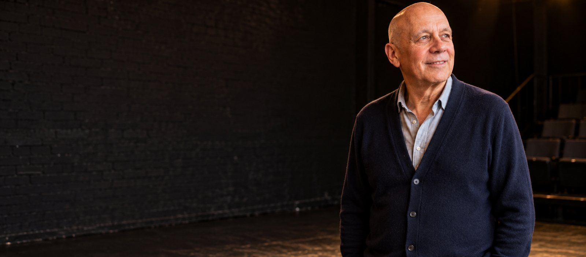
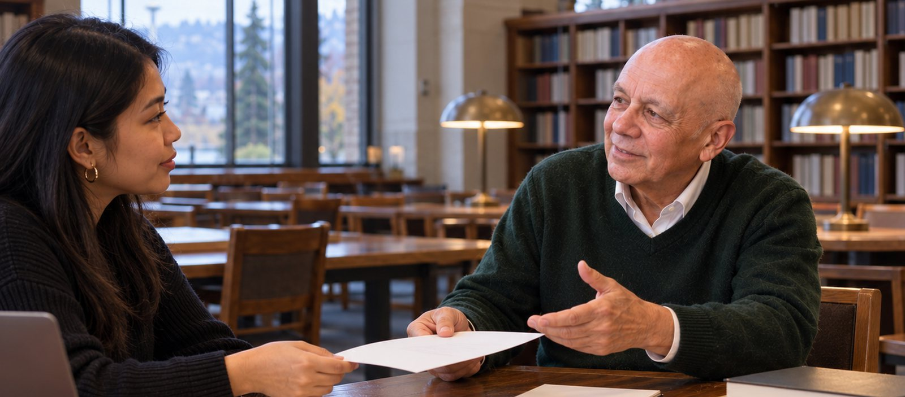

Poet and playwright in Seattle, writing about the city's Filipino community and its relationship with American society. Before that, twenty five years of planning how this county moves, at King County Metro Transit.
Seattle, Washington
About the pictures. Every picture of Robert Flor on this page is an AI-generated illustration, produced with his approval from a reference photograph. They are not photographs of real events.
About
Robert Francis Flor is a Seattle native, raised in the Central District and the Rainier Valley. He spent more than twenty five years at King County Metro Transit as a senior transportation planner and writer, and he now writes plays and poetry. He holds a doctorate from the University of Oregon.
Senior transportation planner and writer at King County Metro Transit from 1971 to 1997. Before Metro, a legislative assistant to the Seattle City Council, and before that a teacher in schools around Seattle.
Short plays, full length plays, radio plays and a poetry chapbook. The work is largely concerned with Seattle's Filipino community and its relationship with American society.
Co-chair of Kultura Arts, a Filipino arts organization. Member of the Seattle Playwrights Circle, the Dramatists Guild, Rain City Writers, Theatre Puget Sound and the YMCA Poetry Workshop.
King County Metro Transit
He joined King County Metro Transit in 1971 and stayed until 1997, as a senior transportation planner and writer. In the late 1990s, as welfare reform changed who needed to travel and when, he developed the Jobs Access Transportation Program.
The program set out transportation services linking inner city neighborhoods to suburban job centers, aimed at the barriers facing single parents looking for work and childcare. It drew attention at state level, led to a conference organized with the Federal Transit Administration that brought several states together on funding, and he secured federal, state and local money to launch it.
The writing
His plays largely concern Seattle's Filipino community and its relationship with American society.

Full length play, 2017
A full length play, produced at the Rainier Arts Center in Seattle in 2017.
New Play ExchangeRadio plays, 2023
Selected for the Jack Straw Cultural Center Artist Support Program in 2023. A King County 4Culture grant supported the recordings. The radio plays include The Christmas Snow Globe and A Christmas in the Cordilleras.
Jack Straw
Poetry chapbook
A poetry chapbook, published with a 2017 Artist Trust GAP grant.
Artist TrustSelected works
Recognition
Contact
For readings, productions, workshops or questions about any of the plays and poems on this page.